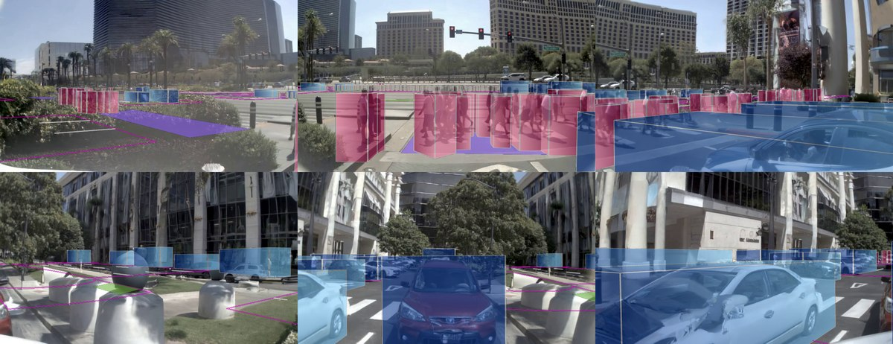
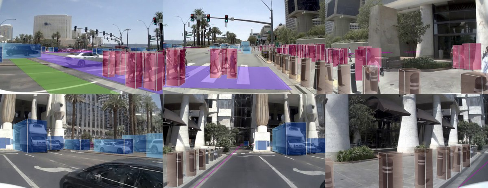
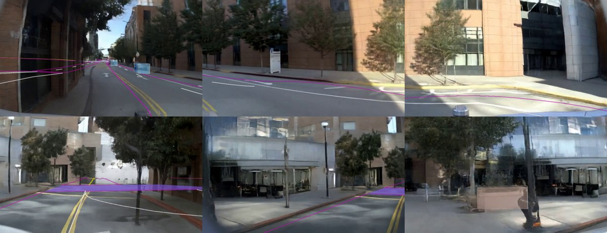
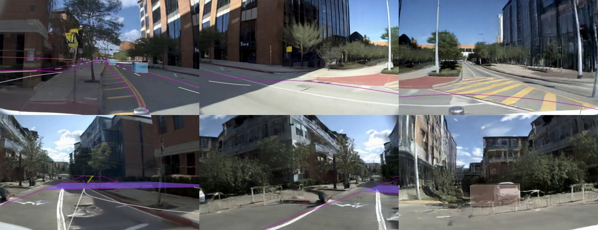
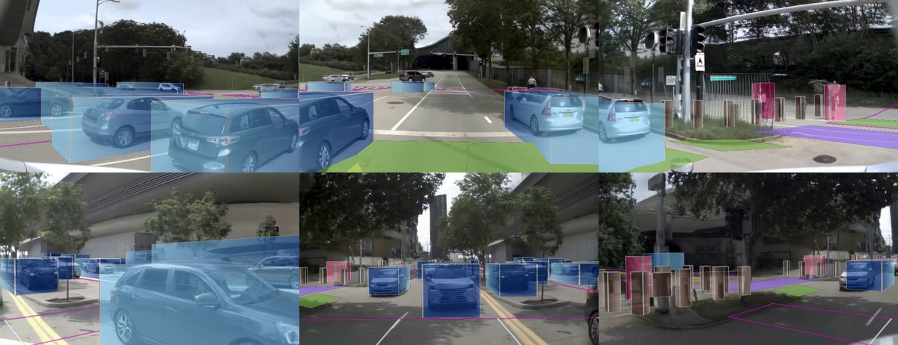
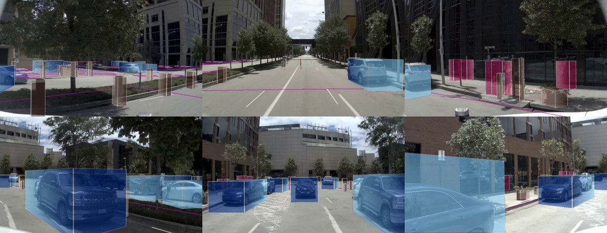
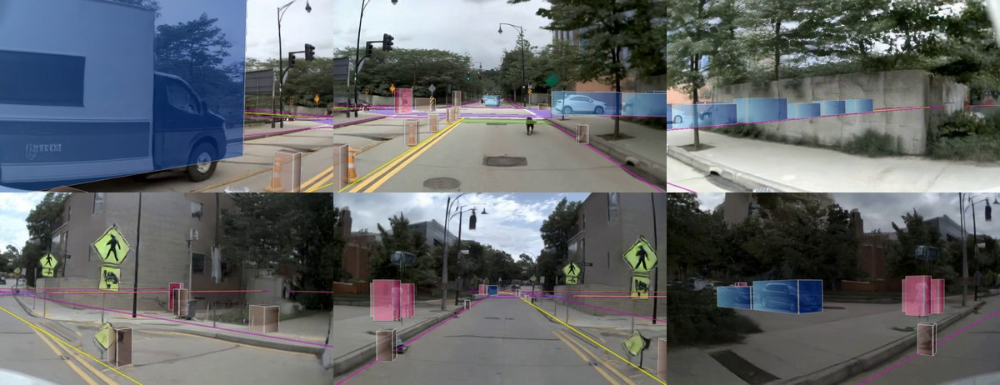
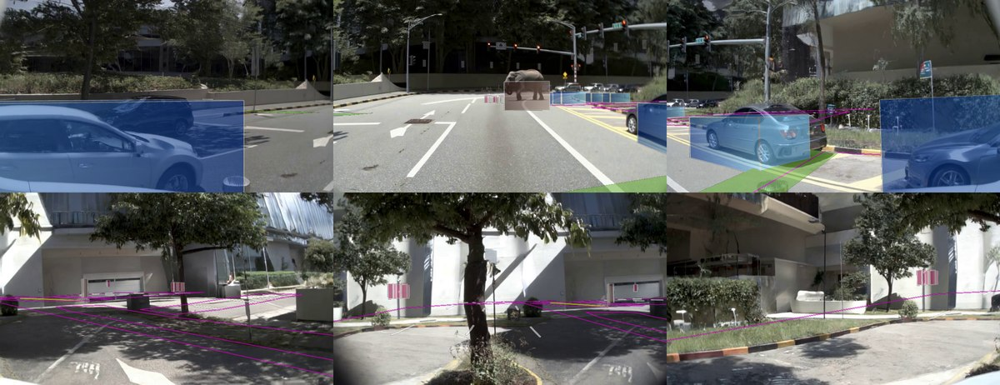
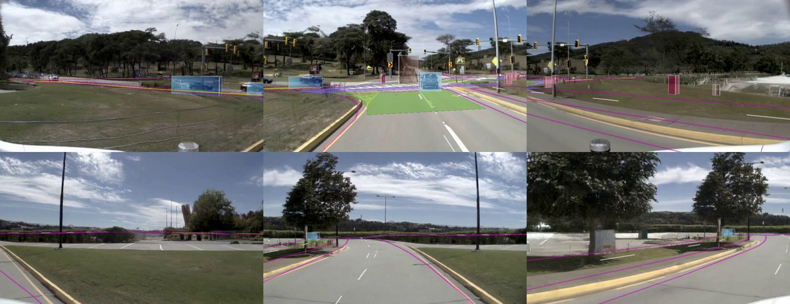
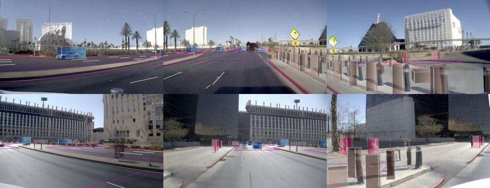

密集行人过街 · 路口

Reference80 EMA · 完整外部前视参考 · 六路 HDMap 与目标框 · 每段 50 步 · CFG 3 · 10 fps
The video shows a realistic front-facing autonomous driving scene on a marked urban road in daylight. A clearly marked zebra crosswalk spans the roadway ahead, with sidewalks, curbs, lane markings, traffic signs, roadside buildings, and normal surrounding vehicles visible in the background. A large but naturally distributed group of pedestrians enters the zebra crossing from both sides and crosses in front of the ego vehicle. The pedestrians are individually spaced rather than standing shoulder to shoulder, and they move at slightly different speeds and depths across the crosswalk, with some already crossing and others just beginning. The ego vehicle approaches the occupied crosswalk and faces a realistic dense pedestrian crossing hazard that requires slowing or stopping. The six camera views surround the same vehicle at this broad city intersection. The surrounding district has large pale hotel buildings, landscaped green trees and palms, concrete sidewalks, short dark bollards, and wide dry gray asphalt lanes. Bright daylight produces distinct shadows and a lightly hazy blue sky. The rear view looks back along the approach road, with lane markings receding into the distance and the same curb, sidewalk, landscaping, and building materials continuing beside it. The rear-left and rear-right views connect these roadside surfaces to the side views with consistent scale, daylight, contrast, and color. Each pedestrian and vehicle keeps one location and trajectory in the shared scene; the occupied crossing ahead is not repeated as a separate crossing event behind the vehicle.
首段其他五路无首帧，续段以各自生成的末帧衔接；两段均使用完整外部前视参考。每例提供独立的 29 帧和 57 帧 MP4。









